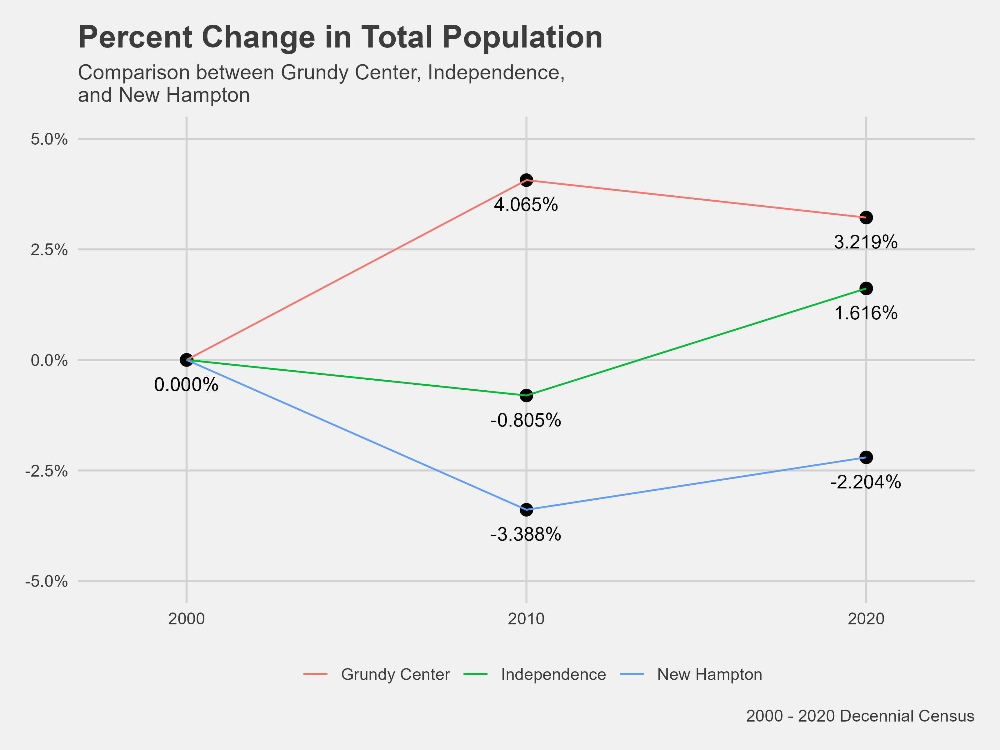
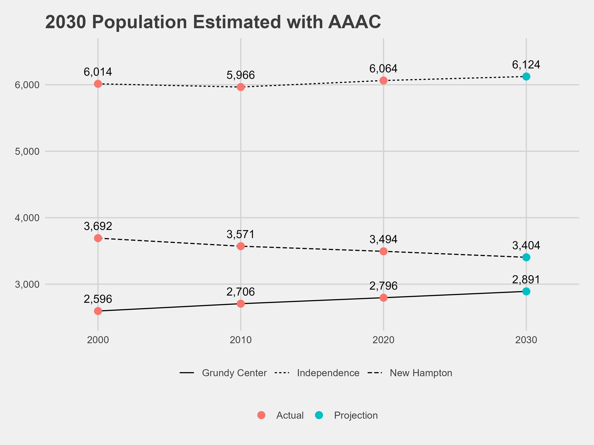
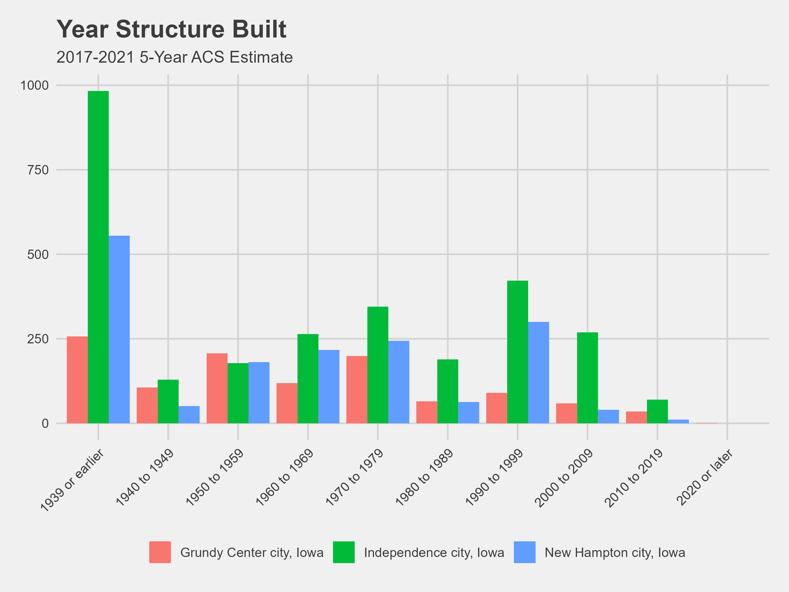
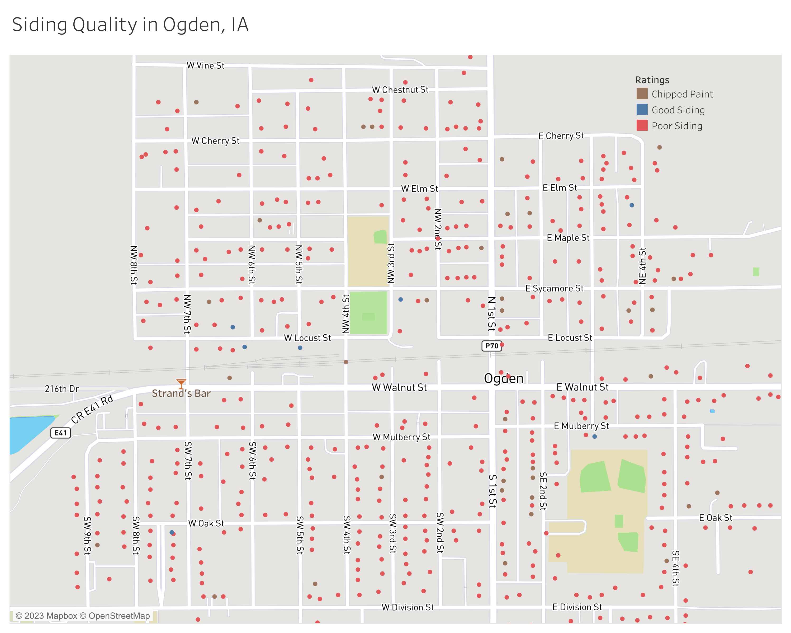
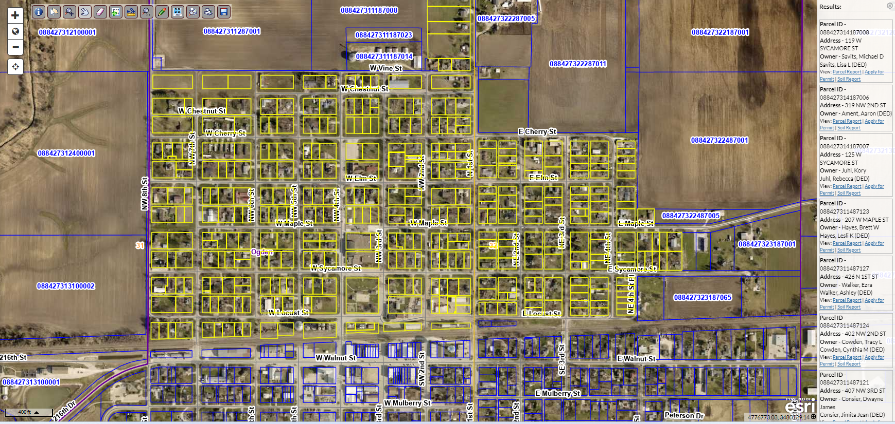
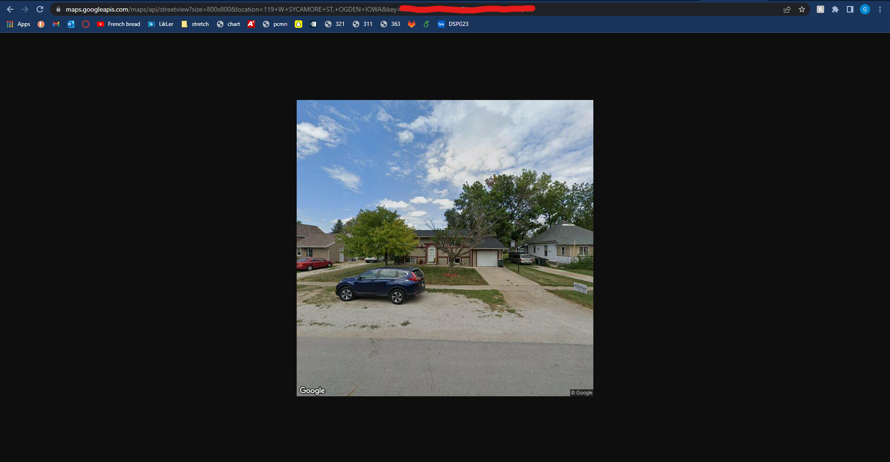
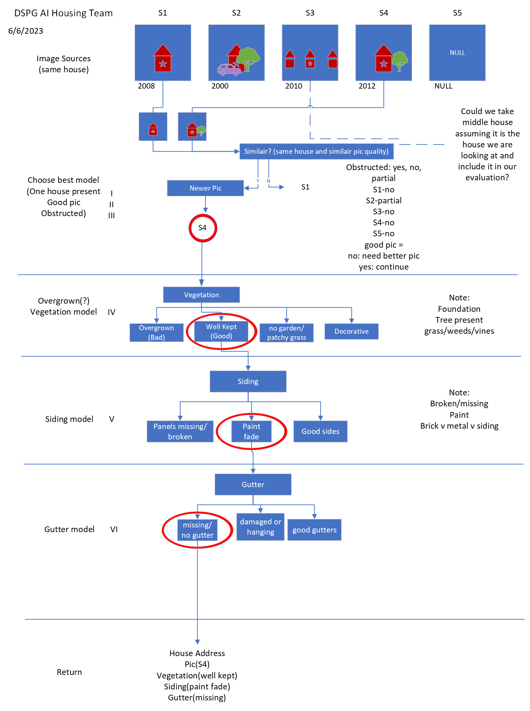

AI-Driven Housing Evaluation for Rural Community Development
 2.png)
Introduction
In rural Midwestern communities, the presence of high-quality and affordable housing plays a crucial role in preserving a good quality of life and fostering the vitality of the region, particularly for individuals involved in agriculture. However, measuring the condition of housing in rural communities can be a complex and subjective task. To address these challenges, there is a pressing need for an Artificial Intelligence (AI) driven approach that can provide a more accurate and objective evaluation of housing quality, identify financing gaps, and optimize the allocation of local, state, and federal funds to maximize community benefits.
Utilizing web scraping techniques to collect images of houses from various assessor websites, an AI model can be developed to analyze and categorize housing features into good or poor quality. This can enable targeted investment strategies. It allows for the identification of houses in need of improvement and determines the areas where financial resources should be directed. By leveraging AI technology in this manner, the project seeks to streamline the housing evaluation process, eliminate subjective biases, and facilitate informed decision-making for housing investment and development initiatives in rural communities.
Goal and Objectives
The goal of the project is to investigate the condition of existing housing stock in rural Midwestern communities and develop a thorough and objective evaluation of housing quality using AI.
Objectives:
Identify study communities within the population range of 500 to 10,000, focusing on stable or increasing population, the presence of a school, and median age of residents.
Explore the industries located in the communities and analyze agricultural census data to understand land ownership characteristics.
Conduct a literature review to examine examples of AI applications in planning and housing.
Collect housing data, including images, from existing sources such as Google Streets and county assessor websites.
Collect data on housing age, number of bedrooms, square footage, and assessed value.
Utilize roofing and gutter detection as part of AI analysis to identify homes that may qualify for community assistance programs addressing water damage issues.
Assess the results and refine selection criteria for Year 2 of the project, considering the insights gained and community input received.
Literature Review
An important objective of the AI-Driven Housing Evaluation for Rural Community Development project was its focus on reviewing as much accessible literature and websites. Review of how cities have been using AI to address problems, and specifically housing problems, and how counties or cities assess housing conditions.
- Ames City Housing Inspection
In the context of housing inspections, the City of Ames in Iowa has implemented a comprehensive housing inspection program to ensure housing quality and safety standards are met. The Ames City Housing Inspection program focuses on various aspects of housing conditions, including grass height, weeds, trees, refuse-garbage, sidewalks, deck/porch, gutters, paint, roof, windows, structural foundation, and graffiti (City of Ames, 2021). This program serves as a valuable reference for evaluating and assessing housing quality in the rural context, particularly in the Iowa region. However, despite the efforts made by programs like the Ames City Housing Inspection, the subjective nature of evaluating existing housing conditions and the limited availability of resources for thorough investigations still pose challenges.
Click here and here to read more.
- U.S Department of Housing and Urban Development
The U.S. Department of Housing and Urban Development (HUD) plays a vital role in ensuring housing quality standards across the United States. In their assessment of housing quality, HUD examines various aspects of the building exterior, including the condition of the foundation, stairs, rails, porches, roof, gutters, exterior surfaces, and chimney. Additionally, HUD emphasizes the importance of evaluating lead-based paint on exterior surfaces to ensure the safety and well-being of residents. These guidelines provided by HUD serve as a valuable reference for assessing and maintaining housing quality standards, contributing to the overall improvement of housing conditions nationwide.
Read more here.
- Orange County minimum housing code
The Orange County minimum housing code plays a crucial role in ensuring housing standards and safety within the county. As outlined in Section 20-34 of the code, specific requirements include the maintenance of a safe foundation, stairs, walls, roofs, and porches. The code also addresses concerns such as high weeds and dilapidated vehicles, which can impact the overall quality of housing in the area.
Read more here.
- In Detroit, 150 residents were tasked with surveying vacant land across the city that could be used. According to Data-Smart City Solutions, part of Harvard University, around 40,000 properties were found to be blighted and were subsequently given priority for either demolition or remediation.
- RoadBotics
RoadBotics has developed a technology using artificial intelligence that has the ability to analyze road imagery to then assess issues and produce cost effective solutions. This allows cities to know when and where repairs need to take place, and deal with them while saving money. This type of technology also improves safety within cities as problems will not go unnoticed.
Read more here.
- Mason City Assessment
According to Tara Brueggeman, an Assessor for Mason City, data is primarily sourced from publicly available platforms such as Beacon and the Vanguard assessment data management system. While web scraping is not feasible, city and county assessor offices can generate customized reports using SQL from Vanguard.
During the appraisal process, appraisers rely on blueprints for property details and conduct in-person visits to measure and inspect properties. Interior inspections are now limited due to homeowner preferences, but the condition of the exterior serves as a valuable indicator. To minimize bias, appraisers adhere to guidelines outlined in the Iowa Real Property appraisal manual, avoid assessments during unfavorable personal circumstances, and undergo a review process by another individual before finalizing assessment records. These efforts contribute to the objectivity and accuracy of property assessments in Mason City.
- Des Moines Neighborhood Revitalization Program
The Des Moines Revitalization program is pioneering a groundbreaking approach to assess housing conditions through the utilization of AI. With the aim of revitalizing the city’s housing stock, this innovative program leverages AI technology to objectively evaluate the condition of homes in Des Moines. By analyzing various data points, including structural features, maintenance history, and overall quality, the AI system provides a comprehensive assessment of each property. This data-driven approach allows the program to identify areas in need of improvement, prioritize revitalization efforts, and allocate resources effectively.
Demographic Analysis
Based on the WINVEST project, the team decided to work with the communities of Grundy Center, New Hampton and Independence. The following characteristics were used for the demographic profile of the communities.
- Home ownership rate
- Population change
- Median household income
- Age of houses
- Median house values
Using the infographics feature on ArcGIS Pro, we created community summary of Iowa state, Grundy center, Independence, and New Hampton respectively.

.png)


To make a community summary infographic you can check here for a guide.
More demographic analysis was done to determine which communities in Iowa could benefit from the project. We used the following indicators;
- Local spending pattern
- Median age of residents
- Population between 500 and 10,000
- Stable, shrinking or increasing population
- Presence of a school
- Communities with growing income base
Include a link to Tableau dashboard here for the demographic analysis.
Using R, the following graphs was created.





Data source
Geographic Analysis
One objective that was later included in the project was using map to display AI-model output for vegetation, siding, gutters etc. This will allow us visualize clusters or locations of houses in good conditions versus poor condition.
To visualize addresses for the communities, first we needed to geocode (latitude and longitude) each address. Base code was from storybench.
More information here.

We later realized we can use Tableau for better data connections and visualizations. We created a step by step process for creating a tableau dashboard showing the output from the AI Models and mapping it to the already geocoded addresses.
Click here for more information.
Workflow
The image below depicts our project plan, outlining the strategies and actions we undertook to accomplish our objectives. The strategies include image gathering / data collection, creating a database and building AI models.

Data Collection
At first, we gathered house images through manual means, amassing a total of approximately 3000 images. However, recognizing the need for a more efficient approach to image collection, we turned to web scraping. Through this technique, we automated the process of acquiring images. Despite this improvement, we still had to manually sift through the gathered images, distinguishing those of high quality and suitable features for training our model from those of poorer quality.
Web Scraping
We planned to collect house images from the following websites;
- Zillow
- Trulia
- Realtors.com
- County Assessor Pages
- Vanguard
- Beacon by Schneider Geospatial
The Beacon website implemented restrictions that prohibit web scraping activities on their platform. One major thing to also note is Zillow owns Trulia.
We resolved to web scraping from the following websites;
- Zillow
- Google Street View
- Vanguard
- Beacon
Based on the WinVEST project, we collected house images of Independence, Slater, New Hampton, and Grundy Center. However, during the process of web scraping to gather images, we encountered an issue with blurred houses. Further investigation revealed that certain homeowners request Google to have their residences intentionally blurred on Google Street View.
.png)
To ensure convenient access to the images collected from various sources, we devised a standardized naming convention: Source, City, Address. For example,
- Zillow
- New Hampton, Iowa
- 311 W Main St
Result: Z_H_311 W MAIN ST
Z - Zillow
G - Google
V - Vanguard
B - Beacon
S - Slater
H - New Hampton
D - Independence
G - Grundy Center
During the data collection process, we encountered “address” inconsistencies in Independence. Some houses had multiple house numbers listed, such as 100/101, while others had addresses like 100 1/2. Fortunately, the function used to retrieve Google images managed to run successfully, although it reported 50 errors related to these address variations, including both the dual house numbers and the presence of half signs. It is worth noting that even if one of the address numbers is removed or the 1/2 is eliminated (essentially removing the “/” sign), the image URL still leads to a valid Google image. In order to address this issue, it is possible to revisit the URLs and modify them to obtain images corresponding to these specific addresses, if necessary.
To learn about the web scraping techniques used for this project, click here.
How to Collect Addresses and Images
Address Collection and Cleaning - Address Collection

Creating Google API Links - Google API

Scrape Google Images - Google Image Scraping
# Ogden
og_data <- read.csv(“~/GitHub/Housing/complete links/ogden_urls.csv”)
urls_start <- og_data[, 1]
urls_full <- paste(urls_start, “&key=”, sep = ““)
urls_full_api_key <- paste(urls_full, api_key, sep = ““)
# creates folder and downloads all images
dir.create(“ogden_google_images_folder”)
for(i in seq_along(urls_full_api_key)) {
___ file_path <- file.path(“ogden_google_images_folder”, paste0(“G_OG_”, og_data[i,6], “_.png”))
___ download.file(urls_full_api_key[i], file_path, mode = “wb”)
___ print(file_path)
___ print(i)
}
AI Models
